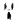

| 2012/04 01 Sun | 107回目*marika |
いつも読んでくださってる方、
初めて読んでくださった方、
コメントしてくださった方
ありがとうございます♪
そろそろあだなを変えたいと思ってるベビたんです

まりかです

昨日のイベントのしゃしーん
お団子の伊藤ちゃんず
わらわら
昨日はお団子とポニーテール率高かったな

今日めっちゃちゅーされたわ

くちぶる奪われた。
らりんにちゅーされた。
くちぶる...く、く、くち...

がちてれ...////////////あぁあああぁああぁ
おう、まい、がっっっっっっっ

写真はほっぺやね。
...
うあああおぉぁあぁあぁぁあああぁ
らりんなんてきらいじゃっっっ
だいっきらいじゃっ
うそやん。
らりんめっちゃだいすーーーーき

そんで、終わったと思ったら...
畠中にもくちぶるちゅーされた。
ういぃいあぁああああぁ
今日ははなぢぶーな日。

乃木坂はきっす魔だらけ。
では、明日も元気に頑張りまりか
 ‼
‼
‼
まりか
コメント(130)
2012/04/01 23:42